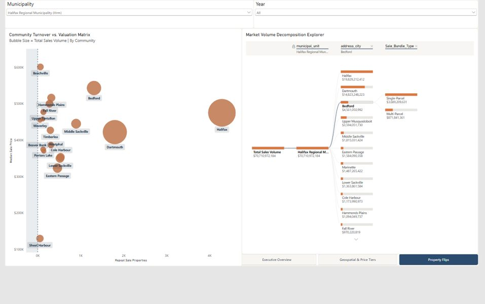
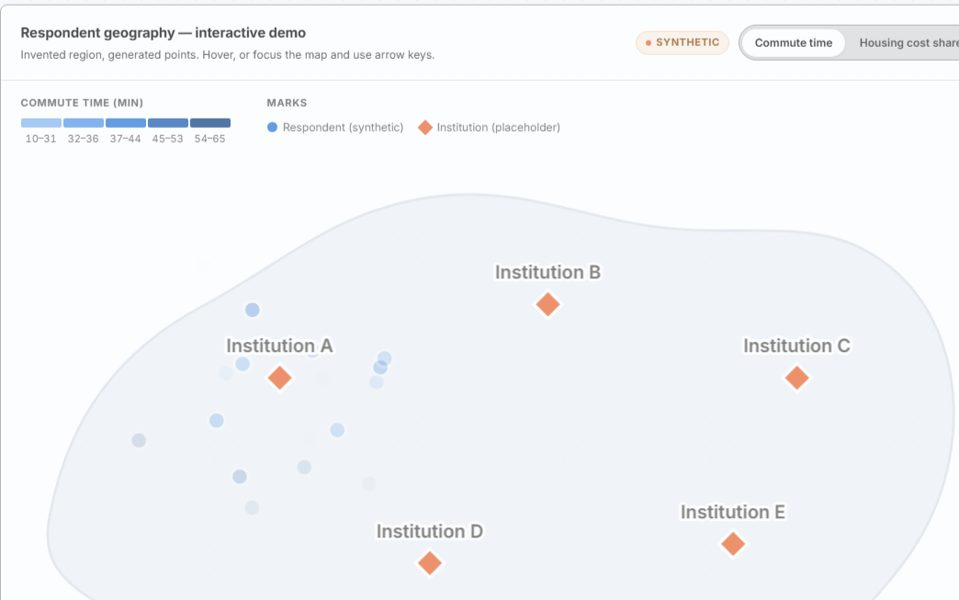
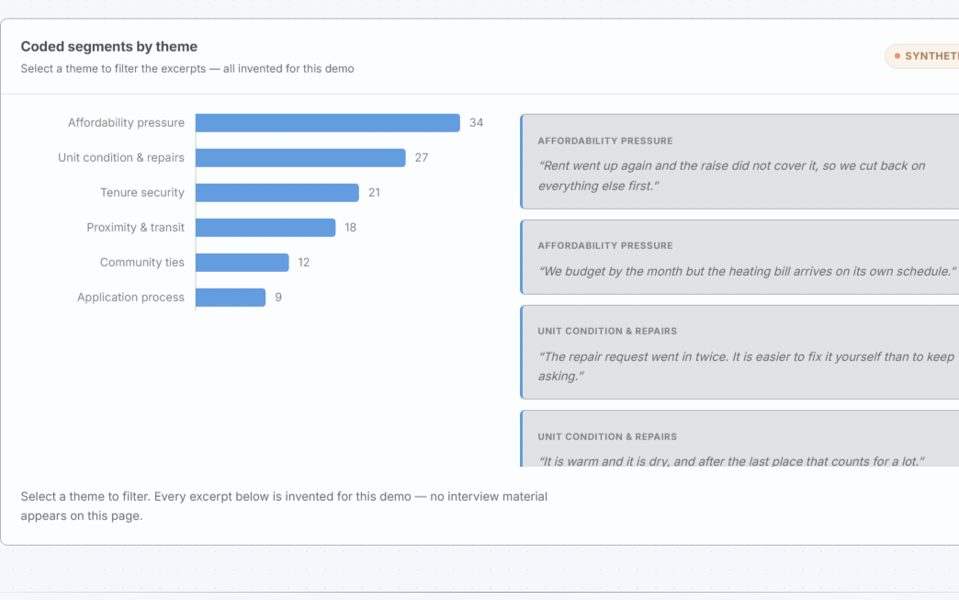

Data Analytics
Cleaning, analysis and reporting that a non-analyst can act on: dashboards, maps and figures that trace back to source.
SQL · Excel · Power BI · Tableau · ArcGIS
Halifax, NS · Open to data roles
Data Analytics Data Science Data Modeling
I turn messy, real-world data into models, analysis and reports that people can check. Every project below is something you can open and use, not just read about.
Cleaning, analysis and reporting that a non-analyst can act on: dashboards, maps and figures that trace back to source.
SQL · Excel · Power BI · Tableau · ArcGIS
Predictive models with honest validation: walk-forward backtests, calibration, and results reported even when they lose.
Python · scikit-learn · XGBoost · R
Star schemas, point-in-time tables, pipelines and audit ledgers, built so every number can be traced.
PostgreSQL · Power Query (M) · Google Cloud · Docker
See: Scalable Brain, System 2, NS Property
Six projects, each with something you can open, explore or run.
Featured · running live
Live system view
A live research and trading data platform, modelled in PostgreSQL. Market data, regimes, signals and trades are fact tables joined to shared dimensions, every research trial is registered whether it passes or fails, and trades land in an append-only ledger. Open it and look around: every number comes from the running system.

Open the live reportData Analytics · Data Modeling
355K+ Nova Scotia property sales pulled from the provincial open-data API, modelled as a star schema and published as a three-page interactive Power BI report.

Explore the case studyData Analytics · Research
Lead analyst on a study across several institutions and four analysis rounds. The case study rebuilds the method with synthetic data so you can click through it.
| Season | Model | Market | ≥70% hit |
|---|---|---|---|
| 2023/24 | 50.4% | 53.3% | 77.0% |
| 2024/25 | 50.8% | 52.4% | 76.5% |
| 2025/26 | 48.9% | 51.7% | 76.4% |
Data Science · Machine Learning
A football prediction app with an automated data pipeline, a logistic-regression model and an honest backtest. Predictions refresh every six hours.

Explore the case studyData Analytics · Mixed Methods
Combining interview evidence with quantitative data for housing research at NewRoots, so each strand checks the other. Rebuilt with invented data to show the method.
Data Engineering
The execution service behind Scalable Brain. It scores live signals, sends each one through an independent risk service, and keeps its ledger in step with the broker.
Roles, education and recognition
Click on any skill to learn more about my experience
Have a question or want to work together? I would love to hear from you.